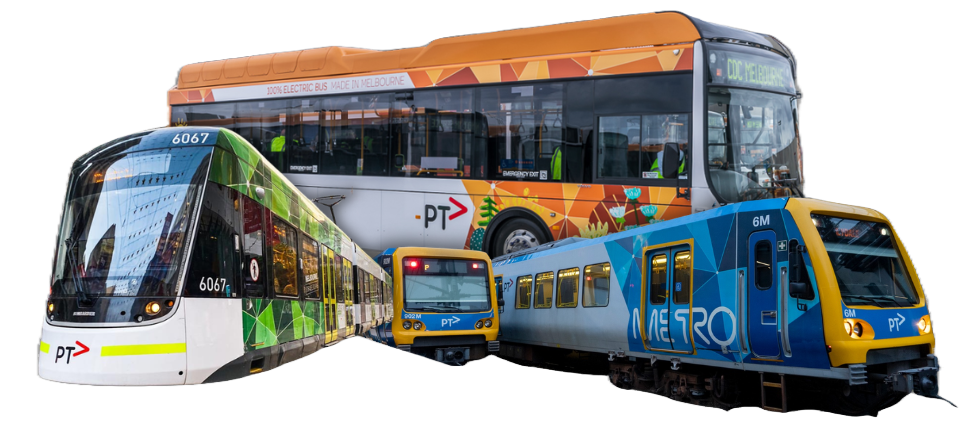

This map illustrates a distinct, high-density cluster centered on metropolitan
Melbourne, (shown by white arrow)
where public transport stops are highly concentrated and
close in proximity to serve area of dense population.
Outside the central, data points follow linear patterns, representing regional tracks and roads.
In the broader regional and rural areas of Victoria, the data distribution is highly sparse.
From 2018 to 2026, train (metropolitan and regional) remains the most famous transport mode.
In 2020, due to lockdowns, entire stream violently pinches inward, (shown by light blue arrows)
reflecting a decrease in monthly passengers for all transport modes.
From 2022 onward, the overall stream widens gradually, (shown by dark blue arrows) proving a massive return of passengers post-lockdown.
This map demonstrates a consistent pattern from 2023 to 2025, where a high-density monocentric network design
remains prominent, proven by a massive cluster of high-volume transit hubs concentrated within the Melbourne CBD (shown by white arrows)
Metropolitan train and tram services consistently dominate ridership volume followed by metropolitan bus, while regional transit options maintain a relatively stable, smaller share throughout the years.
This chart demonstrates that weekday usage consistently exceeds weekend demand across the top 15 stations.
This disparity is most pronounced at high-traffic hubs, whereas usage is balanced at lower-volume stations.
As discussed earlier, metropolitan train has the highest patronage, followed by metropolitan tram and bus.
All modes follow similar pattern (shown by arrows), reflecting high patronage through 2019, a sharp decline in 2020 and steady recovery from 2021.
Public transport's cost-efficiency is a powerful incentive for commuters. As this chart demonstrates, the cost gap (represented by arrows) are particularly significant for longer-distance travel.
While public transport is cost-efficient, it struggles to compete with driving's reliability.
Reliability deficit, represented by arrows reduce commuter's trust, especially for those prioritizing punctuality and predictability.
Hover over groups in chart to highlight and see number of passengers
This chart indicates that public transport is heavily utilized by the prime workforce age (35-44 years old).
Interestingly, there is a relatively symmetrical distribution between males and females, suggesting that public transport in Victoria serves a gender-balanced commuter base.
This chart reveals Full-time Work is the primary activity, with a massive concentration between 30-50 age range.
Followed by younger cohorts concentrate in Schooling (under 20), Retired activity dominates from 65 onwards.
This chart exhibits highly skewed patronage.The PM Peak dominates the total volume, representing majority of activity. This suggests this is a major hub primarily used for commuters returning home in the evening.
In contrast, this chart displays even distribution across all time periods. No single period dominates, indicating a consistent, steady level of usage throughout the day rather than sharp peaks.